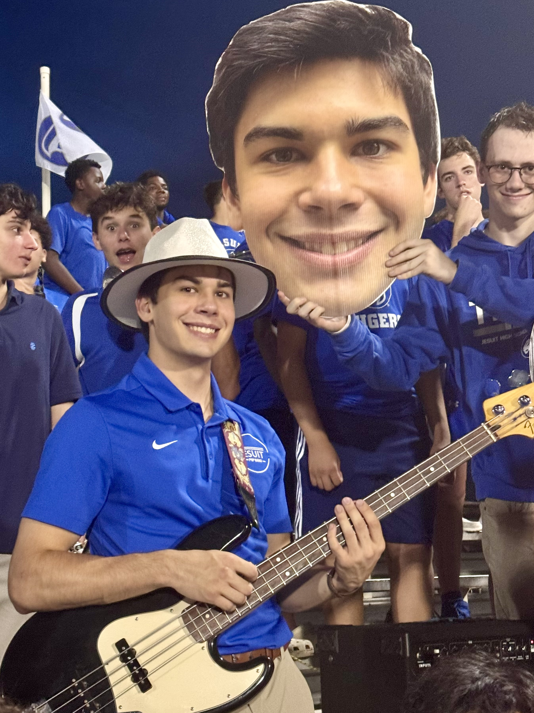
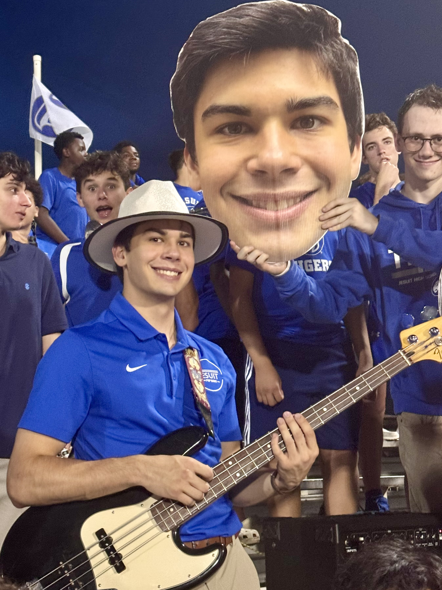

About Me
Raised in Illinois, Schooled in Florida, and Family in Austria. I love dissecting the puzzle of how something works. If you can't buy something... make it instead. Masayoshi Takanaka is the best 70's Musician.
Education
Studying Electrical Engineering at the Georgia Institute of Technology; focusing on Circuit Technology
and Sensing & Exploration specializations.
Pursuing a minor in German with a focus on business language.
Predicted Graduation May 2029.
Skills
Activities & Experience
GT Solar Racing
Member of the electrical team for Georgia Tech Solar Racing. Help design, review, fabricate, and test PCB boards.
Current project is designing and fabbing an "IV Swinger" board which will take in voltage output from our solar arrays and test their condition/health by measuring the respective change in current and graphing an IV curve.
FRC Team 3164
Led and taught other members of the Electrical team while planning projects, leading instructional sessions, and design
Taught team circuit theory, CAN, power distribution, camera-based perception, wiring diagrams, IMU sensors, multimeter
Placed 3rd at the Tallahassee regional and qualified 3rd at the Miami regional competitions
Private Tutoring
Established and networked own private tutoring business focused on educating 5th-12th students
Adapted to tutee's individual learning styles to comprehensibly explain multimodal concepts to 16 students
Tutored: Math, Physics, English, Spanish
Hobbies

 
